Show other papers
1/9 Magnetization Plateau in a Classical Kagome Ising Ferromagnet with Competing Further-Neighbor Interactions
Authors: Yixin Guan, Kan Zhao, Nvsen Ma
Type: theory · Category: statistical mechanics · PDF: https://arxiv.org/pdf/2605.24372v1
Analysis basis: full PDF text, analyzed in chunks
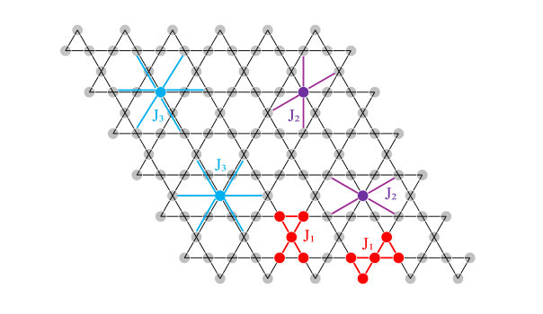
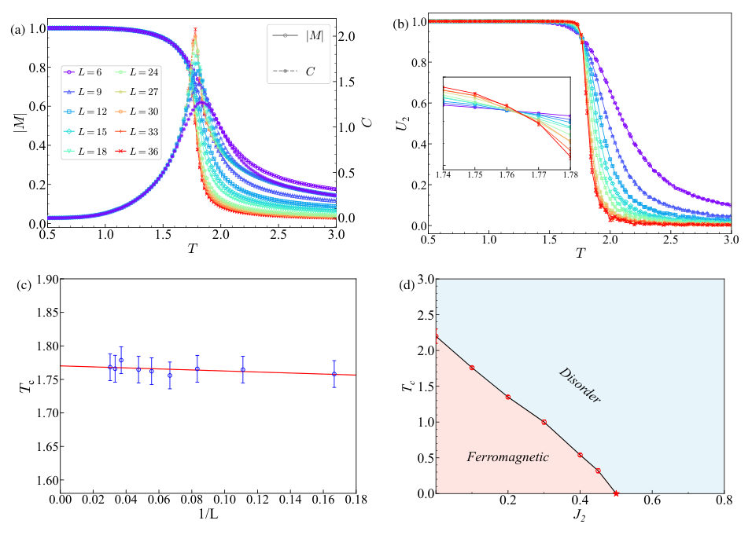
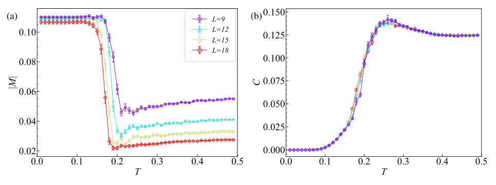
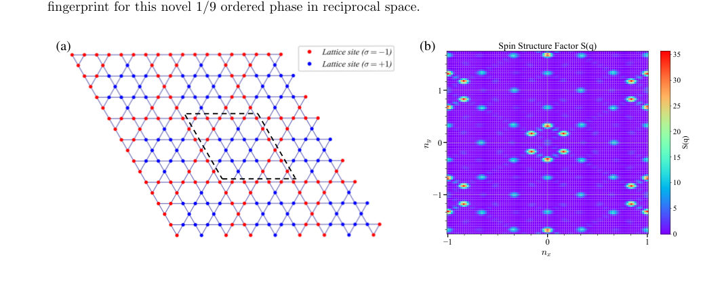
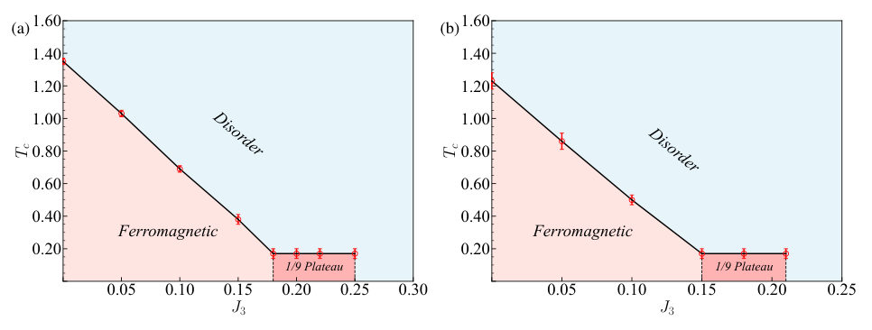
Summary. This paper demonstrates that competing extended interactions in a classical kagome Ising model can stabilize a novel 1/9 magnetization plateau and a 3x3 magnetic supercell. It shows that complex fractional magnetic orders can emerge from purely classical geometric frustration without requiring quantum effects. These findings provide a mechanism for understanding fractionally ordered states in real-world 2D frustrated magnets.
Why it may be interesting. not directly relevant
Detailed structure
Main problem. Investigating how competing further-neighbor interactions (J2 and J3) reintroduce geometric frustration into a classical kagome Ising ferromagnet and how this leads to complex fractional magnetic orders.
Main result. The study discovers a novel 1/9 magnetization plateau phase characterized by a 3x3 magnetic supercell and a stability plateau in the phase diagram where the critical temperature is nearly independent of J3.
Method. Monte Carlo simulations using the Metropolis criterion and simulated annealing, combined with finite-size scaling analysis to determine thermodynamic phase boundaries.
Model / system. A two-dimensional classical Ising model on a kagome lattice with ferromagnetic nearest-neighbor (J1) and antiferromagnetic second- (J2) and third-neighbor (J3) couplings.
Key observables. Absolute magnetization (|M|), specific heat (C), Binder cumulant (U2), and static spin structure factor S(q).
Important parameters / regimes. Exchange coupling strengths J1 (fixed at -1), J2, and J3; temperature T; and lattice size L.
Assumptions / limitations. The model is purely classical and does not account for quantum fluctuations or Heisenberg-type spin dynamics.
Figures summary. Figure 1 shows the kagome lattice geometry and interaction arrangement; Figure 2 displays magnetization, specific heat, Binder cumulant crossings, and the Tc-J2 phase diagram; Figure 3 illustrates the 1/9 phase transition and magnetization convergence; Figure 4 shows the real-space spin configuration.
Paper structure. The paper introduces the problem of frustration in the kagome Ising model, describes the Hamiltonian and simulation methodology, presents the phase diagram results for J2 and J3, analyzes the microscopic structure of the 1/9 phase, and concludes with the physical implications for real frustrated magnets.
Abstract
The two-dimensional kagome lattice is a paradigmatic platform for exploring geometrically frustrated magnetism. While the nearest-neighbor ferromagnetic Ising model on this lattice is theoretically trivial, competing further-neighbor interactions can reintroduce severe frustration. In this work, we systematically investigate a classical kagome Ising model with ferromagnetic nearest-neighbor (J1) and antiferromagnetic second- (J2) and third-neighbor (J3) couplings using simulated annealing Monte Carlo methods. We demonstrate that while J2 couplings merely suppress the conventional ferromagnetic order, the inclusion of J3 fundamentally reconstructs the low-temperature phase diagram. This extended geometric frustration stabilizes a novel ordered phase characterized by a robust 1/9 magnetization plateau and a massively enlarged 3 by 3 magnetic supercell. Crucially, this fractional ordered phase manifests as a stability plateau in the phase diagram, where its critical temperature becomes nearly independent of the coupling strength J3. We also calculate the corresponding static spin structure factor, revealing a distinct Z6-symmetric reciprocal-space signature for experimental identification. Our findings reveal that complex fractional magnetic orders can emerge purely from classical geometric frustration induced by competing extended interactions, providing a distinct mechanism for understanding fractionally ordered states in real frustrated magnets.
A framework for the benchmarking of transport-induced excitations in shuttling-based ion-trap quantum processors
Authors: Rodrigo Munoz, Phil Nuschke, Teresa Meiners, Brigitte Kaune, Christian Ospelkaus
Type: theory · Category: other · PDF: https://arxiv.org/pdf/2605.25118v1
Analysis basis: full PDF text, analyzed in chunks
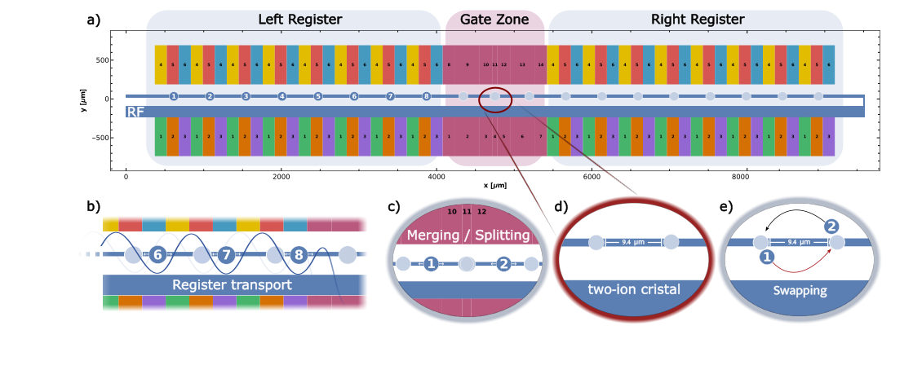
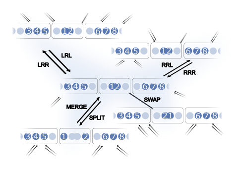
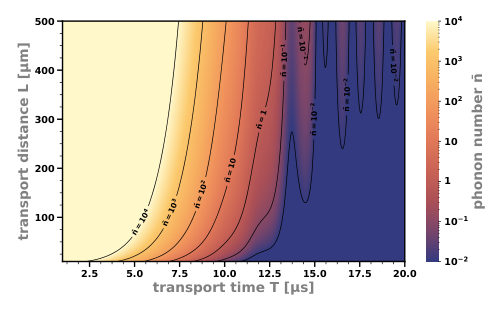
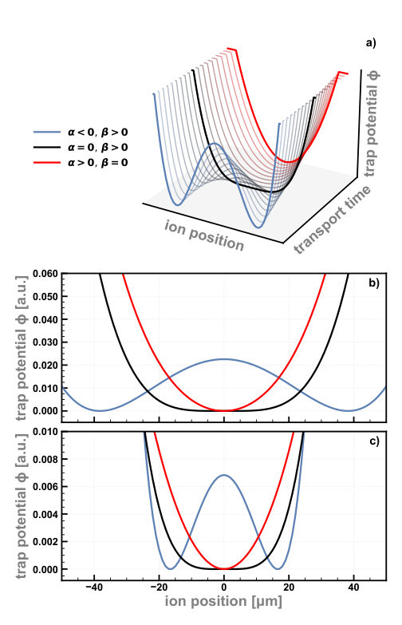
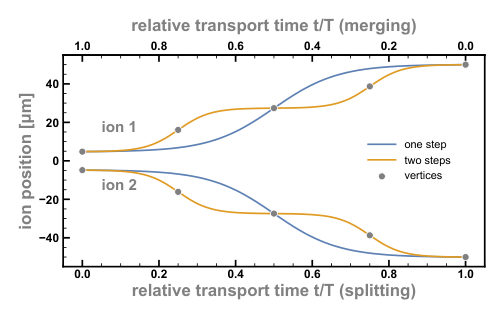
Summary. This paper introduces a theoretical framework to efficiently calculate and minimize motional heating in ion-trap quantum processors during ion shuttling. By decomposing complex movements into simple primitive operations, the authors show how to optimize quantum compiler sequences to balance execution speed with the need to keep phonon numbers below the Doppler limit.
Why it may be interesting. It provides a scalable analytical method for managing decoherence-inducing motional heating in large-scale ion-trap architectures, specifically highlighting how phase-sensitive interference can be used to suppress heating during complex reordering tasks.
Detailed structure
Main problem. Developing a framework to benchmark and minimize transport-induced motional heating (phonon excitation) in shuttling-based ion-trap quantum processors.
Main result. The authors present a decomposition framework that allows for the calculation of total heating in complex shuttling sequences by analyzing primitive operations independently, and demonstrate that optimizing for phonon excitation (Approach B) can leverage destructive interference to stay below the Doppler limit.
Method. A decomposition approach that breaks complex trajectories into primitive operations (transport, merge, split, swap) and uses an algebraic/recursive formulation to estimate global heating without full-trajectory simulations.
Model / system. A shuttling-based ion-trap processor using 9Be+ ions in a QCCD architecture, modeled as a forced parametric harmonic oscillator with time-dependent potentials and Coulomb interactions.
Key observables. Average phonon number (motional excitation/heating), COM and STR mode frequencies, and transport execution time.
Important parameters / regimes. Transport time (T), transport distance (L), trapping frequency, and the N_val parameter for transport profile shaping.
Assumptions / limitations. Neglects voltage noise and anomalous heating in the primary derivation; assumes the frequency modulation term (Q) is negligible for the studied primitives; assumes initial ground-state preparation.
Figures summary. Fig 1: Electrode layout and primitive operations (transport, merge, split, swap). Fig 2: Network slice of instructions and costs. Fig 3: Energy transfer vs. distance and time. Fig 4: Merging/splitting stages. Fig 5: Voltage constraints and potential shapes. Fig 6: Trajectories during splitting/merging. Fig 8: Phonon excitation vs. transport time. Fig 16: Decomposition of heating components. Fig 19: Comparison of optimization approaches A and B.
Paper structure. The paper introduces the hardware architecture, defines the mathematical framework for decomposing operations into primitives, analyzes the physics of heating for individual primitives (transport, merging, swapping), presents an optimization strategy for compiler-level instruction sequences, and concludes with a comparison of different optimization objectives.
Abstract
We develop a theoretical and numerical framework to analyze the effect of transport on the motional states of ions in a trapped-ion quantum processor. We decompose the shuttling protocol into primitive operations and characterize these in terms of their heating performance. Instead of having to simulate the whole transport protocol for each complete ion trajectory, the method allows us to determine the heating properties of each primitive operation separately and obtain the global result through an algebraic expression. We demonstrate our method by applying it to an 8-qubit quantum processor design based on linear transport and swap operations for all-to-all connectivity. We show how to incorporate the price of motional operations at the level of the compiler as a cost function.
A general tensor-structured compression scheme for efficient large language models
Authors: Ying Lu, Peng-Fei Zhou, Qi-Xuan Fang, Pan Zhang, Shi-Ju Ran, Gang Su
Type: theory · Category: disordered systems and neural networks · PDF: https://arxiv.org/pdf/2605.25344v1
Analysis basis: full PDF text, analyzed in chunks
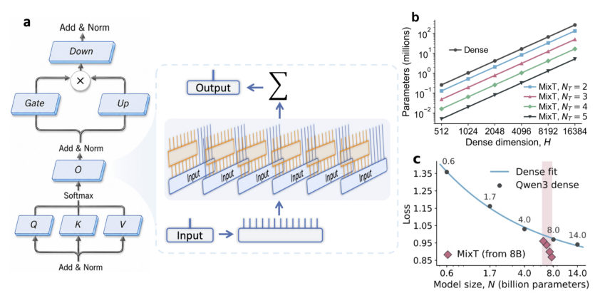
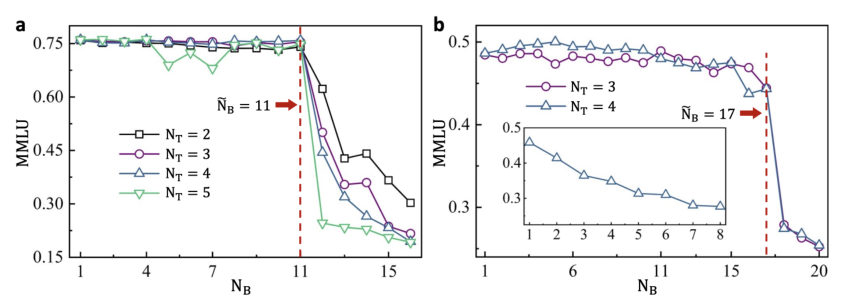
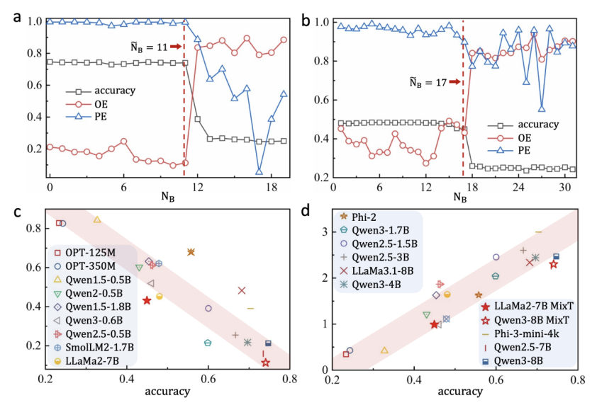
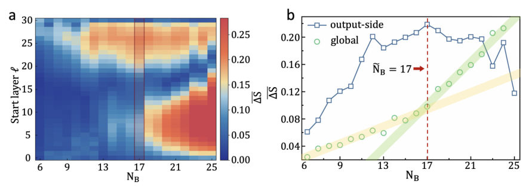
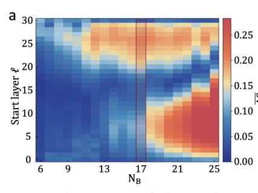
Summary. This paper introduces MixT, a method to compress large language models by replacing dense layers with efficient tensor structures. It discovers a critical-like transition boundary where further compression leads to a sharp collapse in model performance and internal geometric stability.
Why it may be interesting. not directly relevant
Detailed structure
Main problem. Investigating how structural simplification via tensor-structured compression affects the functional integrity and performance of Large Language Models (LLMs).
Main result. The authors identify a stable compression regime and an abrupt transition boundary where model performance degrades sharply, accompanied by shifts in output entropy and inter-layer geometry.
Method. The MixT framework replaces dense linear layers with a mixture of tensor operators and uses a back-to-front compression strategy with a weight-matching recovery protocol.
Model / system. Transformer-based Large Language Models, specifically LLaMA2-7B and Qwen3-8B.
Key observables. MMLU accuracy, Output Entropy (OE), Prediction Entropy (PE), and Inter-layer Geometry Drift.
Important parameters / regimes. Compression depth (number of replaced blocks NB) and the number of tensor branches (NT).
Assumptions / limitations. The study assumes a fixed-budget post-compression recovery stage and focuses on a specific back-to-front compression sweep.
Figures summary. Fig 1 shows the MixT architecture and parameter scaling; Fig 2 displays MMLU accuracy vs. compression depth; Fig 3 relates entropy metrics to accuracy; Fig 4 visualizes inter-layer geometry drift landscapes.
Paper structure. The paper introduces the MixT framework, describes the compression strategy and evaluation protocol, presents results on resource efficiency and performance stability, analyzes the statistical and geometric transitions at the boundary, and concludes with future directions.
Abstract
Large language models (LLMs) are dominated by dense linear transformations, whose storage, memory and computational overheads hinder efficient adaptation and deployment while masking the functional impacts of structural simplification. Here we present Tensor Mixture (MixT), a general tensor-structured compression scheme that replaces targeted dense linear layers with natively executable mixtures of tensor operators. Operating directly on generic linear projections instead of model-specific components, MixT is potentially applicable across Transformer-based LLMs and other dense neural mappings. We evaluate MixT on Qwen3-8B and LLaMA2-7B under a unified recovery protocol, identifying a broad compressible regime in which MMLU accuracy is largely preserved before an abrupt transition at model-specific boundaries. This transition coincides with coordinated shifts in output entropy, prediction entropy and inter-layer geometry. At the LLaMA2-7B transition boundary, MixT reduces full-model parameters by 47.5\%, inference FLOPs by 37.1\%, training FLOPs by 52.1\% and peak inference memory by 60.4\%, demonstrating its practical potential for lower-cost LLM compression.
A Matched Spectral Benchmark of Quantum Inspired Feature Maps
Authors: Toheeb Ogunade, Taofeek Kassim, Etinosa Osaro
Type: experiment · Category: quantum information and computing · PDF: https://arxiv.org/pdf/2605.24324v1
Analysis basis: full PDF text, analyzed in chunks
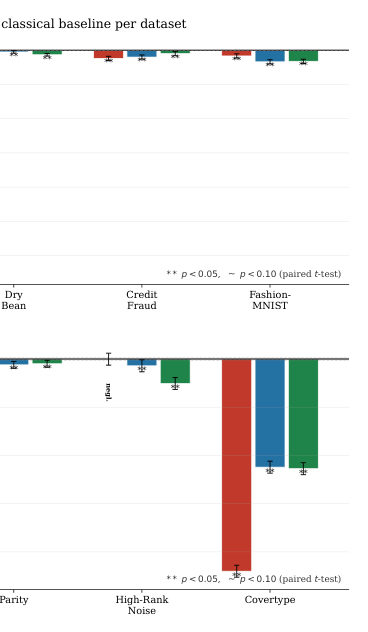
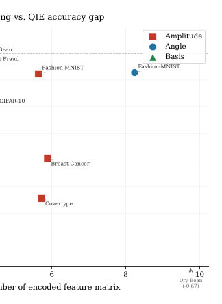
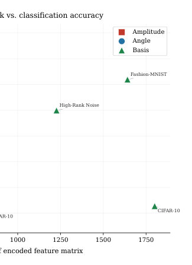
Summary. This paper provides a rigorous benchmark showing that the fixed data-encoding step in quantum machine learning is not a source of advantage on classical data. It identifies specific geometric reasons for this failure, such as the loss of magnitude information in amplitude encoding and the redundancy of angle encoding. The results suggest that true quantum advantage must stem from features beyond fixed encoding, such as entanglement or trainable circuits.
Why it may be interesting. not directly relevant
Detailed structure
Main problem. Investigating whether fixed quantum-inspired data-encoding maps (amplitude, angle, and basis) provide any inherent representational or predictive advantage for classical supervised learning tasks.
Main result. The study finds that fixed quantum-inspired encodings do not provide a statistically significant advantage over strong classical baselines, primarily due to geometric failures like rank collapse in amplitude encoding and geometric redundancy in angle encoding.
Method. A controlled classical benchmark comparing quantum-inspired feature maps against various classical models (SVM, MLP, RFF, etc.) across ten diverse datasets using spectral and geometric diagnostics.
Model / system. The study uses deterministic classical feature maps designed to mimic quantum encoding motifs: amplitude encoding (unit-sphere projection), angle encoding (trigonometric mapping), and basis encoding (binary discretization).
Key observables. Predictive performance (Accuracy, Macro F1), effective rank, condition number, and Centered Kernel Alignment (CKA).
Important parameters / regimes. Output dimensionality (matched between QIE and classical baselines), feature scaling, and discretization bit-depth.
Assumptions / limitations. The utility of a feature map is assumed to be determined by how well its induced similarity structure aligns with the target function's decision structure.
Figures summary. Figure 1 shows Cohen's d effect sizes demonstrating QIE underperformance; Figure 2 correlates condition number with accuracy gaps; Figure 3 relates effective rank to classification accuracy.
Paper structure. The paper introduces the problem of encoding geometry, describes the implementation of the three encoding types and classical baselines, presents a large-scale benchmark across diverse datasets, analyzes the spectral and geometric failure modes (rank collapse, redundancy, mismatch), and concludes by situating these findings within the broader context of QML advantage.
Abstract
Quantum machine learning is often motivated by the idea that quantum systems can expose useful high-dimensional structure that is difficult to access with classical models. We isolate one central component of this claim: the fixed data-encoding map. Amplitude, angle, and basis encoding are evaluated as deterministic feature maps for classical supervised learning under matched output dimensionality and strong classical controls. The benchmark compares these encodings against raw linear models, random Fourier features, polynomial features, PCA, RBF SVMs, and shallow neural networks across diverse classical datasets. Rather than treating performance as a single endpoint, we analyze the geometry of each representation through effective rank, condition number, centered kernel alignment, predictive performance, and practical overhead. The resulting picture is mechanistic: amplitude encoding can remove magnitude information through unit-sphere normalization, angle encoding can become geometrically redundant with raw linear features, and basis encoding can impose a binary Hamming geometry that is poorly aligned with smooth decision structure. These findings do not argue against quantum computation, however, they show that fixed quantum-inspired encoding geometry alone is not a reliable source of machine-learning advantage on classical data.
Asymptotically Optimal Depth Fermionic Permutation on 2D Grid Quantum Architecture without Ancillas
Authors: Dantong Li, Shifan Xu, Yongshan Ding
Type: theory · Category: quantum information and computing · PDF: https://arxiv.org/pdf/2605.26041v1
Analysis basis: full PDF text, analyzed in chunks
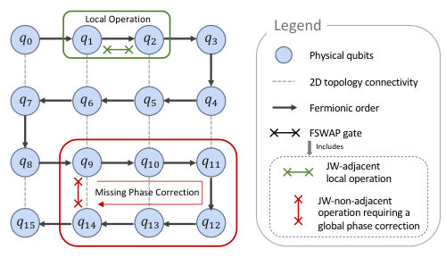
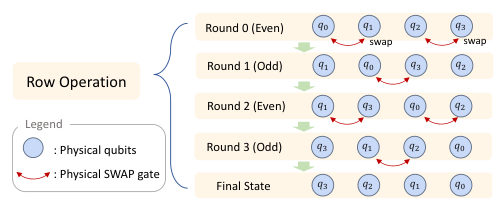
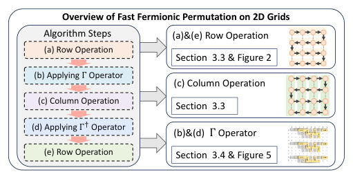
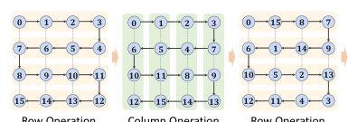
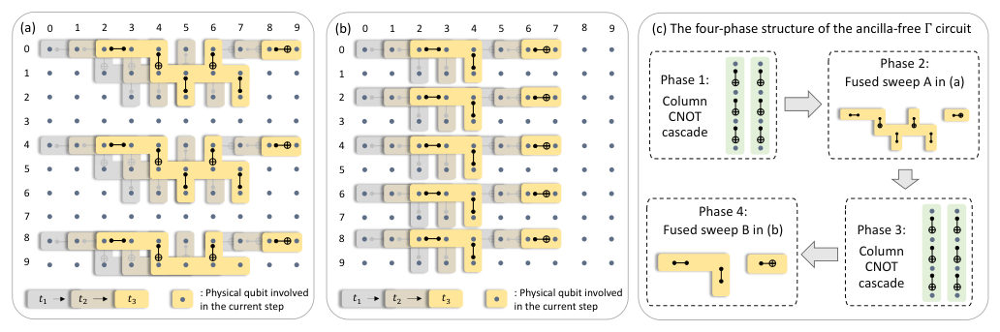
Summary. This paper presents an optimal method for performing fermionic permutations on 2D quantum grids. By using a specialized routing and phase-correction strategy, it achieves the theoretical minimum circuit depth without needing extra ancilla qubits or complex classical feedback. This significantly reduces the resource requirements for simulating fermionic systems in the early fault-tolerant era.
Why it may be interesting. not directly relevant
Detailed structure
Main problem. Efficiently implementing fermionic permutations on 2D nearest-neighbor quantum architectures without incurring the high depth overhead caused by non-local parity strings.
Main result. A protocol that achieves asymptotically optimal O(sqrt(N)) depth and O(N*sqrt(N)) gate count without using ancilla qubits, mid-circuit measurements, or classical feedforward.
Method. The authors use a three-stage Row-Column-Row (RCR) decomposition with an Odd-Even Transposition sort and a diagonal Gamma operator to resolve non-local phase corrections.
Model / system. A 2D grid quantum architecture with nearest-neighbor connectivity, utilizing Jordan-Wigner, Bravyi-Kitaev, and Parity fermion-to-qubit encodings.
Key observables. CNOT depth, gate count, spacetime volume, and circuit infidelity.
Important parameters / regimes. The early fault-tolerant regime, specifically for system sizes N >= 100.
Assumptions / limitations. The architecture is a fixed 2D grid with nearest-neighbor connectivity and a 'snake' Jordan-Wigner ordering.
Figures summary. Figure 1 shows the snake-like ordering on a grid; Figure 5 illustrates the four-phase structure of the Gamma operator circuit; Figure 6 shows the ternary tree encoding; Figure 7 shows the transformation pipeline between encodings; Figure 8 shows the Hilbert-curve-based routing.
Paper structure. The paper introduces the routing problem, presents the RCR decomposition protocol, details the ancilla-free Gamma operator construction, extends the results to BK and Parity encodings via Hilbert curves, and concludes with numerical benchmarks on FFFT and the SYK model.
Abstract
Simulating fermionic systems on qubit hardware involves many nonlocal interactions, and efficient routing of these interactions is critical to the overall cost of fermionic simulation algorithms. Recent works reduce this Jordan-Wigner routing overhead to polylogarithmic depth under all-to-all connectivity, but degrade to $O(\sqrt{N}\,\mathrm{polylog}\,N)$ for $N$ fermionic modes on 2D nearest-neighbor architectures. We present a fermionic permutation protocol tailored to 2D grid architectures that achieves the optimal $O(\sqrt{N})$ depth with $O(N\sqrt{N})$ nearest-neighbor gates and no ancilla qubits, mid-circuit measurements, or classical feedforward. This matches the $Ω(\sqrt{N})$ lower bound, which holds even when $O(N)$ ancillas and classical feedforward are permitted. We further construct an $O(\sqrt{N})$-depth transformation between the Jordan-Wigner, Bravyi-Kitaev, and Parity encodings on the 2D grid via a Hilbert-curve layout, extending our result to all three encodings. Benchmarks on the fermionic fast Fourier transform and Trotter simulation of sparse SYK model demonstrate consistent reduction in depth, spacetime volume, and infidelity for system sizes $N \gtrsim 100$ in the early fault-tolerant regime.
Balancing structure and randomness: maximum entropy networks for context-dependent computations
Authors: Ludwig Hruza, Srdjan Ostojic
Type: theory · Category: disordered systems and neural networks · PDF: https://arxiv.org/pdf/2605.25607v1
Analysis basis: full PDF text, analyzed in chunks
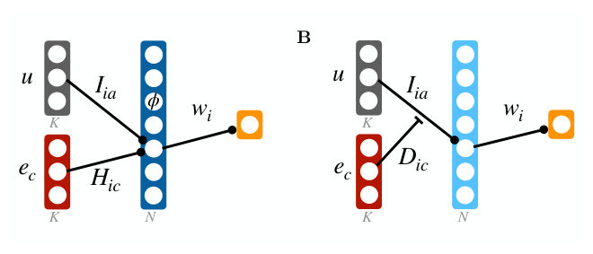
Summary. The paper proposes a principle-based approach to neural connectivity using maximum entropy to find the most random distribution of weights that still satisfies specific task requirements. It demonstrates that this framework naturally predicts the emergence of specialized neuron populations and matches the results of standard machine learning training algorithms.
Why it may be interesting. not directly relevant
Detailed structure
Main problem. Understanding how neural connectivity structure is constrained by network function and addressing the dependency of current gradient-descent approaches on specific training procedures.
Main result. The authors show that a maximum entropy approach, which maximizes Shannon entropy subject to task constraints, produces a connectivity structure that matches networks trained via gradient descent both qualitatively and quantitatively.
Method. A normative approach using the maximum entropy principle, mapping nonlinear networks onto gain-modulated linear models, and employing Lagrangian optimization and saddle-point approximations.
Model / system. A one-hidden-layer feed-forward neural network in the mean-field limit, performing context-dependent input-selection tasks where contextual signals act as multiplicative gains.
Key observables. Weight correlations (between output and input weights, and between different input weights), neuron selectivity, and the probability distribution of gains.
Important parameters / regimes. Weight scale parameter (sigma^2), number of contexts (K), and gain types (binary vs. continuous).
Assumptions / limitations. The network operates in the large N (mean-field) limit, neurons are independent and identically distributed (i.i.d.), and connectivity can be described by a smooth probability distribution.
Figures summary. Figure 1 illustrates the network architecture and its mapping to a gain-modulated model; Figure 2 shows weight scatter plots; Figure 4 displays the MaxEnt distribution for continuous gains; Figure 5 compares binary and continuous gains; Figure 6 compares gradient descent training to MaxEnt predictions; Figure 7 shows numerical vs. analytical solutions for Lagrange multipliers.
Paper structure. The paper introduces the problem of structure-function relationship, proposes a MaxEnt framework, derives the analytical solution via linearization and Lagrangian optimization, explores different regimes (varying K and weight scale), validates the theory against gradient descent simulations, and provides asymptotic analysis for large K.
Abstract
Understanding how network function constrains neural connectivity is a central challenge in neuroscience. An influential approach is to train neural networks with gradient descent on cognitive tasks and characterize the resulting connectivity. A key limitation is that the resulting structure depends on the details of the training procedure. Here we propose a complementary normative approach based on the maximum entropy principle for network connectivity, independent of any particular learning algorithm. We describe connectivity as a probability distribution over single-neuron weights, express task requirements as constraints on this distribution, and determine the unique distribution maximizing Shannon entropy subject to these constraints. A weight scale parameter controls the balance between randomness and task-induced structure. We apply this framework to context-dependent input-selection tasks in 2-layer feed-forward networks, and show that maximum entropy inference becomes analytically tractable by mapping nonlinear networks onto gain-modulated linear models. Starting from an a priori homogeneous distribution, we find that maximizing entropy under task constraints leads to the emergence of populations of neurons, each defined by its pattern of contextual gain modulation. Increasing the number of contexts drives a transition from context-specialized to unspecialized, random populations. Increasing the weight scale drives a parallel transition from structured to random stimulus selectivity. Strikingly, this maximum entropy connectivity matches both qualitatively and quantitatively the structure of networks trained with gradient descent across different learning regimes. Our results suggest that the interplay between task constraints and entropy maximization provides a fundamental principle for understanding the relationship between structure and function in neural networks.
Bargmann Zeros as a Diagnostic of the Tunneling Transition in Double-Well Quantum Systems
Authors: Tughanbulut Kurtulush, Maciej Janowicz
Type: theory · Category: numerical methods · PDF: https://arxiv.org/pdf/2605.25862v1
Analysis basis: full PDF text, analyzed in chunks

Summary. The paper demonstrates that the complex zeros of a wavefunction in the Bargmann representation provide a clear visual and analytic signature of the tunneling transition in double-well potentials. As the barrier height increases, these zeros migrate and condense onto the imaginary axis. This discovery extends the use of 'zero images' from random polynomials to physically realized quantum eigenstates.
Why it may be interesting. This provides a new analytic, purely geometric diagnostic for tunneling regimes, which could be useful for characterizing tunneling in more complex many-body or multi-mode systems where energy splitting is difficult to resolve directly.
Detailed structure
Main problem. Investigating whether the complex zeros of wavefunctions in the Bargmann-Fock representation (Bargmann zeros) can serve as a diagnostic tool to identify and track the tunneling transition in symmetric double-well quantum systems.
Main result. The study finds that as the potential barrier increases, the Bargmann zeros undergo an 'imaginary-axis condensation,' migrating from off-axis patterns to being aligned on the imaginary axis, which correlates with the exponential collapse of tunneling splitting.
Method. A variational ansatz using a symbolic envelope multiplied by a neural network correction is optimized via Rayleigh-Ritz minimization (Adam and L-BFGS) and then projected onto a harmonic-oscillator basis to locate complex zeros.
Model / system. One-dimensional quantum systems including harmonic, quartic-anharmonic, and symmetric double-well potentials, specifically focusing on the transition in the double-well as the barrier parameter is varied.
Key observables. Bargmann zeros (complex zero distribution), tunneling splitting (energy difference between ground and first-excited states), and Fock-coefficient sign-alternation patterns.
Important parameters / regimes. Barrier parameter (a), perturbation strength (epsilon), Fock truncation order (Nmax), and grid resolution (N).
Assumptions / limitations. The analysis is limited to one-dimensional systems and relies on a truncated Bargmann polynomial; the results assume the stability of the zero set within a specific radius.
Figures summary. Figures demonstrate the migration of zeros onto the imaginary axis, the correlation between zero condensation and tunneling splitting decay, and ablation studies regarding neural network capacity and grid resolution.
Paper structure. The paper introduces the Bargmann-Fock representation, describes the variational neural-network-based optimization method, presents the results for harmonic and anharmonic potentials, details the discovery of zero condensation in double-well systems, and concludes with ablation studies on numerical robustness.
Abstract
Complex zeros of wavefunctions represented as entire functions in Bargmann--Fock space encode structural information about the underlying quantum state. Prior work employed zero galleries of randomly generated polynomial superpositions of Fock states as visual fingerprints suitable for classification. Here we examine whether Bargmann zeros of physically realized eigenstates of one-dimensional anharmonic and double-well Hamiltonians carry a recognizable signature of the tunneling transition in the symmetric double well. Ground and first-excited eigenstates are obtained from a variational ansatz consisting of a physically motivated symbolic envelope multiplied by a small flexible correction network, trained by Rayleigh--Ritz minimization of the finite-difference Hamiltonian expectation value and validated to reproduce energies to within $\sim 10^{-5}\,\mathrm{Ha}$. The resulting wavefunctions are projected onto the harmonic-oscillator basis and the complex zeros of the truncated Bargmann polynomial are located by numerical root-finding. For harmonic and quartic-anharmonic potentials the zeros show no preferred orientation. For double-well eigenstates, by contrast, the zeros condense onto the imaginary axis. A sweep of the barrier parameter $a$ from $0.5$ to $2.3$ reveals a continuous migration of zeros toward the imaginary axis, concurrent with the exponential collapse of the tunneling splitting $Δ(a) = E_1 - E_0$ over $3.5$ decades. This condensation is traced to a sign-alternation pattern in the Fock-coefficient spectrum that is characteristic of bimodally localized wavefunctions. The complex zero set of the Bargmann-represented wavefunction thereby provides a compact, purely analytic diagnostic for the tunneling regime of one-dimensional double-well Hamiltonians, extending the random-polynomial zero-image framework to physical eigenstates.
Beyond Logical Circuits: Hardware-Aware Analysis of Expressibility and Trainability in Variational Quantum Algorithms
Authors: Muhammad Kashif, Muhammad Shafique
Type: theory · Category: quantum information and computing · PDF: https://arxiv.org/pdf/2605.25552v1
Analysis basis: full PDF text, analyzed in chunks
Summary. This paper demonstrates that the process of compiling quantum circuits for specific hardware can fundamentally change their performance characteristics. It shows that the relationship between a circuit's ability to represent states and its ease of optimization is not preserved during transpilation, meaning logical-level designs may fail on real hardware.
Why it may be interesting. not directly relevant
Detailed structure
Main problem. Investigating whether hardware-aware transpilation (qubit mapping, routing, and gate decomposition) fundamentally alters the expressibility and trainability of Variational Quantum Algorithms (VQAs) compared to their logical circuit designs.
Main result. Transpilation acts as an architectural perturbation that can significantly deviate expressibility by up to 125% and trainability by up to 25%, effectively decoupling the well-known logical-level expressibility-trainability trade-off.
Method. A systematic comparison of logical and transpiled Parameterized Quantum Circuits (PQCs) using fidelity-based KL divergence for expressibility and gradient variance for trainability, simulated on a noiseless statevector simulator.
Model / system. The study uses various PQC ansatz families (including EfficientSU2, HEA Ring, TTN, and MPS Brick) mapped to the IBM FakeBrooklynV2 heavy-hex architecture.
Key observables. Expressibility (KL divergence), trainability (gradient variance), circuit depth overhead, and qubit expansion.
Important parameters / regimes. Qubit counts (2 to 10), circuit depths/layers (2 to 10), and Qiskit transpiler optimization levels (0 to 3).
Assumptions / limitations. The analysis uses a noiseless statevector simulator, focusing on structural/algorithmic changes rather than hardware noise or decoherence.
Figures summary. Figure 1 shows transpilation-induced overhead in expressibility and trainability; Figure 3 illustrates gate count and depth increases; Figure 6 compares logical vs. transpiled qubit counts; Figure 7 shows circuit depth overhead; Figure 8 displays expressibility overhead; Figure 9 displays trainability overhead.
Paper structure. The paper introduces the gap between logical and physical PQC properties, describes the methodology for hardware-aware analysis, presents results for various ansatz families regarding depth and qubit overhead, analyzes the impact on expressibility and trainability, and concludes with the necessity of hardware-aware evaluation.
Abstract
Variational quantum algorithms (VQAs) rely on parameterized quantum circuits (PQCs), whose performance is governed by expressibility and trainability. Existing studies typically evaluate these properties at the logical circuit level, implicitly assuming that designed PQCs remain unchanged during hardware execution. In practice, however, hardware-aware transpilation modifies circuit structure through qubit mapping, routing, and basis decomposition, potentially altering PQC behavior. In this paper, we perform a systematic hardware-aware analysis of expressibility and trainability by comparing logical and transpiled PQCs across multiple ansatz families, qubit counts, and circuit depths. Expressibility is measured using fidelity-based KL divergence, while trainability is quantified through gradient variance. Our results show that transpilation acts as an implicit architectural perturbation, producing strongly ansatz-dependent effects. Expressibility deviations exceed upto 125% in some cases, while trainability variations reach up to 25%. Structured ansatzes are generally more robust, whereas highly entangled architectures are more sensitive to transpilation-induced transformations. We further show that transpilation can alter the commonly assumed expressibility-trainability trade-off, demonstrating that logical-level analyses may not reliably predict hardware-level behavior. These findings highlight the importance of hardware-aware evaluation for accurate characterization of VQAs.
Bipartite Cholesky Graph Networks for Many-Body Quantum Chemistry
Authors: Abdul Samad Khan
Type: theory · Category: disordered systems and neural networks · PDF: https://arxiv.org/pdf/2605.25268v1
Analysis basis: full PDF text, analyzed in chunks

Summary. This paper introduces a new graph neural network architecture that uses Cholesky decomposition to represent electron repulsion integrals in a bipartite graph structure. This approach preserves essential higher-order interaction structures while reducing computational complexity, leading to much more accurate predictions of molecular correlation energies.
Why it may be interesting. not directly relevant
Detailed structure
Main problem. The computational bottleneck of O(N^4) scaling in electron repulsion integrals (ERI) and the loss of higher-order interaction structures in existing graph neural network approaches to quantum chemistry.
Main result. The Bipartite Cholesky Graph Network achieves a significantly lower Mean Absolute Error (0.0296 Ha) than compressed-integral baselines and demonstrates that generalization is driven by orbital-structural similarity.
Method. A bipartite graph neural network architecture that uses Cholesky decomposition of the ERI tensor to create a graph with orbital nodes and auxiliary interaction nodes, utilizing tensor contractions to maintain interaction topology.
Model / system. The model targets the correlation energy of many-body molecular systems, specifically evaluated on six diatomic molecules (CO, HF, Li2, LiH, N2, O2) using a non-relativistic electronic Hamiltonian and STO-3G basis.
Key observables. Correlation energy (Delta E_corr) and Mean Absolute Error (MAE) in Hartrees.
Important parameters / regimes. Scaling of the forward pass (empirical O(N^2.20) and theoretical O(N^3)) and the number of auxiliary interaction nodes.
Assumptions / limitations. The ERI supermatrix is assumed to be symmetric and positive semi-definite; the model currently relies on single-reference Hartree-Fock references.
Figures summary. Figure 1 illustrates the bipartite architecture, showing orbital nodes exchanging information through auxiliary interaction nodes via Cholesky weights without direct orbital-to-orbital edges.
Paper structure. The paper introduces the computational problem of ERI scaling, presents the Bipartite Cholesky Graph Network architecture and its derivation from tensor factorization, details the implementation and scaling, reports performance benchmarks and ablation studies, and concludes with an analysis of zero-shot generalization via leave-one-molecule-out validation.
Abstract
Accurate prediction of molecular correlation energies from first principles requires resolving the {O}(N^4) electron repulsion integral (ERI) tensor. Existing graph neural network approaches to the electronic structure problem often compress this tensor into low-rank scalar features, discarding higher-order interaction structures relevant to electron correlation. In this work, we demonstrate that tensor factorization of the ERI naturally induces a structured bipartite message-passing architecture that preserves access to higher-order interaction structure more effectively than compressed orbital representations. By utilizing the density-fitted Cholesky decomposition of the ERI tensor, we derive a bipartite graph network that models orbital degrees of freedom and auxiliary interaction nodes as distinct sets, maintaining interaction topology at a reduced theoretical complexity of {O}(N^3). Evaluated on 132 geometries of six diatomic molecules with Full Configuration Interaction (FCI) reference energies, our factorized representation achieves an in-distribution Mean Absolute Error (MAE) of 0.0296 Ha under five-fold cross-validation, a substantial improvement over compressed-integral baselines. Leave-one-molecule-out validation reveals that zero-shot generalization varies by nearly a factor of four across molecular species and correlates with the structural similarity of the held-out molecule's orbital environment to the training distribution, rather than with nuclear charge asymmetry alone.
Charge density wave in a band insulator
Authors: Md Shafayat Hossain, Wenhao Liu, Yuqi Zhang, Qi Zhang, Chao Lei, Nana Shumiya, Kouta Dagnino, Maksim Litskevich, Yu-Xiao Jiang, Jia-Xin Yin, Nikhil Dhale, Zi-Jia Cheng, Byunghoon Kim, Yongkai Li, Tyler A. Cochran, Xian P. Yang, Fan Zhang, Yugui Yao, Zhiwei Wang, Bing Lv, Titus Neupert, Luis Balicas, M. Zahid Hasan
Type: experiment · Category: strongly correlated electrons · PDF: https://arxiv.org/pdf/2605.24153v1
Analysis basis: full PDF text, analyzed in chunks
Summary. The researchers discovered a charge density wave in the band insulator Bi4Br4, a phenomenon that contradicts the standard theory that CDWs require a Fermi surface. They observed that the CDW adds an additional gap to the existing insulating gap and exhibits nonlinear transport characteristic of a sliding mode. This finding suggests a new class of insulator-to-insulator phase transitions driven by phonon instabilities.
Why it may be interesting. not directly relevant
Detailed structure
Main problem. Investigating the emergence of a charge density wave (CDW) in a band insulator where no Fermi surface exists, challenging the conventional Peierls instability paradigm.
Main result. Experimental evidence of an insulator-to-insulator transition in Bi4Br4, where a unidirectional charge modulation develops below 40 K, accompanied by nonlinear transport indicating a sliding phason mode.
Method. Low-temperature Scanning Tunneling Microscopy (STM) for topographic and spectroscopic imaging, combined with DC electrical transport measurements and phonon dispersion calculations.
Model / system. The physical system is alpha-Bi4Br4, a quasi-one-dimensional, higher-order topological band insulator with a fully gapped Brillouin zone.
Key observables. Charge order wavevector (Q_CO), spectroscopic gap enhancement, threshold electric field (E_th) for nonlinear conduction, and spectroscopic contrast reversal.
Important parameters / regimes. Temperature regime below 40 K, energy gap of ~225-260 meV, and CDW period of approximately 3 nm.
Assumptions / limitations. The system is assumed to be a clean band insulator without significant mid-gap states from disorder prior to the CDW formation.
Figures summary. Fig 1: Crystal structure, STM topography, and FFT showing charge order. Fig 2: Spectroscopic dI/dV maps showing contrast reversal. Fig 3-4: Domain wall identification and temperature-dependent gap evolution. Fig 5: Comparison of B-type surface layers. Fig 6: Transport data including resistance vs temperature and nonlinear dV/dI vs electric field.
Paper structure. The paper introduces the material and the anomaly of CDW in an insulator, presents STM evidence of charge modulation and domain structures, provides spectroscopic evidence of the gap enhancement, details transport evidence of collective dynamics, and concludes with a proposed phonon-driven mechanism.
Abstract
Charge density wave (CDW) implies a periodic modulation of the charge density. Typically observed in metallic systems, CDWs arise from Fermi surface instabilities, resulting in the total or partial gapping of the Fermi surface. Here, we present experimental evidence for a CDW state emerging in a band insulator which has no Fermi surface. The bulk and surface of our material platform, Bi4Br4, is gapped over the entire Brillouin zone. Through topographic and spectroscopic imaging at low temperatures, we unveil an unexpected unidirectional charge modulation in Bi4Br4, breaking the lattice translation symmetry. The CDW develops at temperatures below 40 K and adds an energy gap atop the existing insulating gap of Bi4Br4. Furthermore, our transport measurements reveal nonlinear electrical conduction, a phenomenon conventionally associated with the sliding or phason mode of incommensurate CDWs. These highly unusual observations represent a new type of CDW and demand a new theoretical framework for CDWs.
Cluster moves with an entropic reservoir accelerate low-temperature simulations of three-dimensional spin glasses
Authors: Claudio Chilin, Enzo Marinari, Víctor Martín-Mayor, Giorgio Parisi, Juan J. Ruiz-Lorenzo, David Yllanes
Type: theory · Category: disordered systems and neural networks · PDF: https://arxiv.org/pdf/2605.25872v1
Analysis basis: full PDF text, analyzed in chunks
Summary. The authors present a new Monte Carlo algorithm, PTHR, designed to accelerate the simulation of 3D spin glasses in the deep low-temperature phase. By combining cluster moves with an entropic reservoir, the method significantly outperforms standard parallel tempering and provides a massive speedup for studying complex disordered systems.
Why it may be interesting. not directly relevant
Detailed structure
Main problem. Simulating three-dimensional spin glasses at very low temperatures is computationally difficult due to temperature chaos and the extreme difficulty of reaching thermal equilibrium in large systems.
Main result. The new PTHR algorithm achieves a speedup of up to 64 times compared to previous cluster methods and allows for the equilibration of larger systems (up to L=16) at temperatures as low as T=0.2.
Method. The PTHR algorithm combines Parallel Tempering with Houdayer cluster moves and an entropic reservoir to refresh configurations and accelerate equilibration.
Model / system. A 3D Edwards-Anderson Ising spin glass model on a simple-cubic lattice with Gaussian-distributed random couplings.
Key observables. Site overlap (qi), global overlap (q), link overlap (ql), Schwinger-Dyson-Young (SDY) observable (S), and temperature chaos parameter (X).
Important parameters / regimes. Temperatures down to T=0.2 (approx. 0.21Tc), lattice sizes up to L=16, and Gaussian couplings with zero mean and unit variance.
Assumptions / limitations. The algorithm's efficiency is limited by the percolation of clusters in 3D, which can turn cluster moves into simple symmetry transformations.
Figures summary. Figure 1 shows cluster size distribution; Figure 2 compares equilibration progress using the SDY observable; Figure 3 and 4 show autocorrelation times and round-trip time distributions; Figure 5 analyzes the scaling of mixing times and temperature chaos.
Paper structure. The paper introduces the PTHR algorithm, describes the physical model and simulation setup, presents performance comparisons against standard PT and PT-ICM, analyzes the scaling and complexity related to temperature chaos, and discusses implementation optimizations like multispin coding and look-up tables.
Abstract
We present an algorithm for the simulation of three-dimensional spin glasses deep in the low-temperature phase: Parallel Tempering enhanced with Houdayer moves and with an entropic reservoir (PTHR). Although differences with the standard Houdayer algorithm are small, PTHR allows us to equilibrate a large number of samples of $L=16$ lattices with Gaussian couplings for temperatures $T\geq 0.2$. We show that the computational complexity displays better size scaling than standard Parallel Tempering. For finite sizes, our method outperforms other cluster algorithms by a speedup factor of around 64. In close analogy with standard Parallel Tempering, PTHR's computational complexity strongly relates to temperature chaos.
Defect Conformal Manifolds along RG Domain Walls between $\mathbb Z_N$-Parafermions and Minimal Models
Authors: Jin-Rui Zhang, Jing-Hao Jin, Ting-Kai Chen, Jin Chen
Type: theory · Category: other · PDF: https://arxiv.org/pdf/2605.24978v1
Analysis basis: full PDF text, analyzed in chunks
Summary. This paper provides an algebraic construction of continuous defect conformal manifolds along non-perturbative RG domain walls. By focusing on the emergence of 'phantom currents,' the authors resolve the tension between marginal deformations and the cluster decomposition principle. They show that the transmission of information across these walls vanishes in the large-N limit due to a macroscopic collapse of the target space.
Why it may be interesting. not directly relevant
Detailed structure
Main problem. The paper investigates the existence and properties of continuous defect conformal manifolds along Renormalization Group (RG) domain walls between Z_N parafermion theories and Virasoro minimal models.
Main result. The authors demonstrate that a spin-1 phantom current allows for a marginal deformation that generates a continuous defect conformal manifold, and they derive an explicit expression for the transmission rate across the wall, which vanishes in the large-N limit.
Method. A bottom-up approach is used, employing the folding trick, symmetry tracking of non-invertible so(3)_N symmetries, and OPE analysis of phantom currents to bypass the need for an explicit Gaiotto-type construction.
Model / system. The system consists of RG domain walls (conformal interfaces) interpolating between a UV fixed point (Z_N parafermion theory/N-state Potts model) and an IR fixed point (Virasoro minimal model M_{N+1}).
Key observables. Transmission rate (T_N(theta)), phantom currents (spin-1 J and spin-2 W-), and the moduli parameter (theta).
Important parameters / regimes. The integer N (defining the Z_N symmetry), the central charges (c_UV and c_IR), and the large-N limit.
Assumptions / limitations. The analysis assumes the validity of the coset decomposition and focuses on the preservation of the so(3)_N fusion subcategory.
Paper structure. The paper begins by defining the RG flow and the problem of constructing domain walls, moves to a bottom-up identification of phantom currents via symmetry tracking, uses an algebraic framework (folding trick and OPEs) to resolve the central charge mismatch paradox, and concludes with the derivation of the transmission rate and its large-N behavior.
Abstract
We investigate the renormalization group (RG) domain walls interpolating between the $\mathbb{Z}_N$ parafermion theory (the critical $N$-state Potts model) and the Virasoro minimal model $\mathcal{M}_{N+1}$. These flows are genuinely non-perturbative and an explicit construction of Gaiotto type RG domain wall remains elusive. We bypass this limitation by employing a bottom-up approach centered on the emergence of ``phantom currents". By tracking the preserved non-invertible symmetries ($\mathfrak{so}(3)_N$) along the flow, we extract the exact spectrum of these currents localized on the defect. We demonstrate that the presence of a spin-1 phantom current allows the interface to be marginally deformed, dynamically generating a continuous defect conformal manifold. Furthermore, we show that an extra spin-2 operator, crucially as a $W^{(3)}$-algebra descendant of the spin-1 phantom current, rigidly constrains the UV-IR stress tensor mixing via the cluster decomposition principle. This algebraic framework enables the exact computation of the parameter-dependent transmission rate across the conformal manifold, which we observe strictly vanishes in the large-$N$ limit as a consequence of macroscopic target space collapse.
Demagnetization effect on magnetic noise measurements in spin ice materials
Authors: F. Morineau, C. Paulsen, G. Balakrishnan, D. Prabhakaran, K. Matsuhira, S. R. Giblin, E. Lhotel
Type: experiment · Category: strongly correlated electrons · PDF: https://arxiv.org/pdf/2605.25993v1
Analysis basis: full PDF text, analyzed in chunks

Summary. This paper shows that the geometry of a sample significantly distorts magnetic noise measurements in spin ice, meaning measured noise does not directly reflect intrinsic dynamics. The authors provide a framework for correcting these effects and suggest that sample shape should be treated as a key experimental control parameter. This is crucial for accurately comparing experimental noise data with microscopic theories of spin dynamics.
Why it may be interesting. not directly relevant
Detailed structure
Main problem. Investigating how demagnetizing fields caused by sample geometry renormalize and bias magnetic noise spectra and extracted dynamical parameters in spin ice materials.
Main result. The authors demonstrate that measured magnetic noise and susceptibility are strongly shaped by sample geometry, leading to significant quantitative biases in extracted relaxation times and power spectral density, and a systematic underestimation of the anomalous exponent alpha.
Method. Simultaneous measurement of magnetic noise spectroscopy and AC susceptibility using a SQUID magnetometer on single-crystal spin ice samples of varying shapes (spheres, parallelepipeds, cylinders) at low temperatures.
Model / system. The study focuses on spin ice materials, specifically Ho2Ti2O7 and Dy2Ti2O7, which exhibit emergent magnetic monopole dynamics. The analysis uses the Fluctuation-Dissipation Relation (FDR) and Kramers-Kronig relations to relate noise to susceptibility.
Key observables. Spectral noise density S(f), AC susceptibility (real part chi' and imaginary part chi''), demagnetizing factor N, and relaxation parameters (tau, alpha, S0).
Important parameters / regimes. Low-temperature regime (600 mK to 4.2 K), demagnetizing factor N, and frequency-dependent relaxation processes.
Assumptions / limitations. Samples are treated as having ellipsoidal geometry for applying the demagnetizing factor; the accuracy of N is limited by the non-ideal shape of certain samples.
Figures summary. Figure 1 compares measured vs corrected susceptibility for different Ho2Ti2O7 geometries; Figure 4 shows noise scaling with N; Figure 6 shows temperature evolution of noise spectra; Figure 7 shows the temperature-dependent bias in extracted parameters; Figure 8 and 9 demonstrate the success and failure of KK-based corrections at different temperatures.
Paper structure. The paper introduces the problem of demagnetization in noise spectroscopy, presents experimental data on various sample geometries, quantifies the error propagation in susceptibility corrections, analyzes the bias in extracted dynamical exponents, and evaluates the limits of using Kramers-Kronig relations for correction.
Abstract
Magnetic noise spectroscopy provides direct access to spontaneous time-dependent magnetization fluctuations in correlated magnetic systems, including spin liquids, spin ices, and spin glasses. Here we investigate how demagnetizing fields shape the magnetic noise spectra measured in spin ice. By combining magnetic noise and ac susceptibility measurements on single-crystal spin ice samples with different sizes and shapes, we show that magnetic noise, like linear response, is strongly renormalized by sample geometry. As a consequence, measured noise spectra do not directly yield the intrinsic fluctuation spectrum, and demagnetization corrections cannot in general be determined from noise data alone. Instead, sample geometry must be treated as a central experimental control parameter for accessing intrinsic dynamics. These results establish the role of boundary conditions in fluctuation spectroscopy and provide a framework for quantitatively comparing noise measurements with microscopic theories of spin dynamics.
Digital twins for compact hybrid quantum classical learning in FMCW radar detection
Authors: Sebastian Ratto Valderrama, Ahmed N. Sayed, Arien Sligar, Jose R. Rosas-Bustos, Omar M. Ramahi, George Shaker
Type: theory · Category: quantum information and computing · PDF: https://arxiv.org/pdf/2605.24187v1
Analysis basis: full PDF text, analyzed in chunks

Summary. This paper investigates using physics-informed digital twins to benchmark quantum machine learning for radar signal processing. It demonstrates that quantum kernels can outperform classical kernels in specific radar classification tasks when using compressed feature sets. The results suggest that the utility of quantum kernels is highly dependent on the specific geometric structure of the sensing task.
Why it may be interesting. not directly relevant
Detailed structure
Main problem. Evaluating the effectiveness of physics-informed digital twins as controlled testbeds for benchmarking quantum-classical radar learning, specifically comparing quantum kernel performance to classical kernels.
Main result. The quantum support vector classifier (QSVC) showed a performance advantage over the classical RBF-SVC in a UAV classification task at higher PCA dimensions, while performance was comparable in a human fall detection task.
Method. The study uses a pipeline of PCA-based dimensionality reduction followed by classification using RBF-SVC and a Qiskit-based QSVC with a ZZFeatureMap, evaluated using noiseless classical statevector simulations.
Model / system. The system consists of two synthetic radar 'digital twins': a 77 GHz FMCW radar for UAV classification using Range-Doppler Maps, and a 60 GHz FMCW radar for human fall detection using Doppler-time spectrograms.
Key observables. Classification accuracy and robustness to Gaussian noise.
Important parameters / regimes. PCA dimensions (d = 2, 4, 6, 8), Gaussian noise levels (sigma = 0.0 to 0.5), and radar carrier frequencies (60 GHz and 77 GHz).
Assumptions / limitations. The study assumes noiseless quantum operations (no hardware noise), uses synthetic data rather than real-world measurements, and utilizes magnitude-based radar products rather than raw complex I/Q data.
Figures summary. Figure 1 shows the kernel pipeline; Figure 2 displays radar input examples; Figure 3 plots accuracy vs. PCA dimension; Figure 4 visualizes the effect of noise injection on radar maps.
Paper structure. The paper introduces the problem of radar QML benchmarking, describes the digital twin setup and preprocessing pipeline, presents comparative results for two different radar tasks, evaluates robustness to noise, and discusses limitations and future work.
Abstract
Frequency-modulated continuous-wave radar sensing often relies on labeled measurements that are costly, restricted, or difficult to collect at scale. This work evaluates physics-informed digital twins as controlled testbeds for early-stage quantum-classical radar learning. Two synthetic radar benchmarks are considered: unmanned aerial vehicle classification from range-Doppler maps and human fall detection from Doppler-time spectrograms. For both tasks, inputs are standardized, reduced using principal component analysis, and classified using either a radial basis function support vector classifier or a quantum support vector classifier. All quantum-kernel results are obtained using noiseless classical simulation; no quantum hardware is used, and no quantum-advantage claim is made. Across five random seeds, the quantum support vector classifier improves the UAV benchmark from four principal components onward, reaching an accuracy of 0.941 +/- 0.012 at eight components, compared with 0.880 +/- 0.029 for the classical baseline. On the fall-detection benchmark, both classifiers perform similarly, with a small quantum-kernel improvement at higher feature dimensions. A Gaussian-noise robustness study shows limited performance degradation across the tested noise levels, while preserving the UAV quantum-kernel gain. These results support digital twins as useful, controlled environments for radar-QML benchmarking prior to measured-data validation and hardware execution.
← Index · ← Previous · Next →